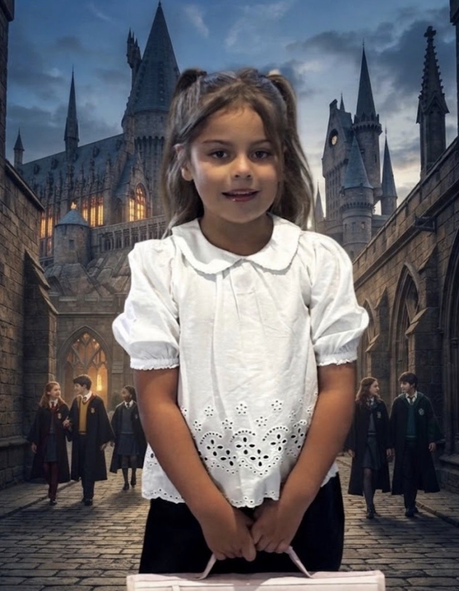

Le Grand Chêne
Domaine de Bohême

📜 Souvenirs Partagés
Photos de groupe et événements
Philippe trop gentil 🐷
Album de Lana
Lana au cœur du château enchanté.
Fermer
🔑 Mode Administrateur
+ Ajouter Photo
Gérer l'Arbre